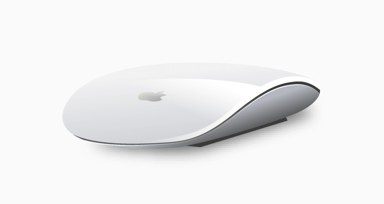

A designer always ponders upon what comes across the eyes and asks questions...a lot of them. (Picture from UX Magazine)
Looking At The World Differently
Good designers tend to look at the world a bit differently. Through their “designer’s eyes”, they constantly reflect on the things with which they interact, the quality of that interaction, and ultimately how the experience unfolds. Does the experience breakdown? Why or why not? Do they notice the artifact because of a breakdown (present-at-hand), or are they able to remain focused on their goal without thinking of the artifact per se (ready-to-hand)? When the experience is successful, what properties of the design make it so? When the experience is unsuccessful, do they seek for workarounds to achieve their goal in some other way?
My Design Principles
Having trained to put on these designer's eyes for a while, I've over time generated a list of design principles which I strive to always keep at heart. In a way, these principles serve as an effective guidance as I embark on various design challenges - whether it is in the shoe of a critic or creator. From everyday objects to digital products, I try to gear these principles towards the design of anything that I have a chance to interact with. Simply speaking, a "good" or "bad" design is determined based on how closely they align with these principles.
In essence, my 10 design principles are as follows:
- Consistent In Presentation
- Self-Evident
- Convenient In Usage
- Self-Explanatory
- Clean Aesthetics
- Safe
- Honest
- Adaptable
- Pleasant Colors
- Immediate Feedback
Yes, bad design exists everywhere. And they really hurt. (Picture from Wired)
Consistent In Presentation
Products of the same model & line should possess a consistent design embedded in every single aspect of its creation/presentation. This will help users quickly recognize their presence & usage in public.
Self-Evident
Products should be designed based on a “Don’t Make Me Think” principle. The design should be intuitive to users and they should be able to figure out how to use the product within the least amount of time as possible.
Convenient In Usage
Users should be able to accomplish their tasks using the products quickly & easily, anytime & anywhere. They should be able to store as well as gain access to the products fast and with no efforts.
Self-Explanatory
If the features cannot be understood immediately, at least their design should help users experience a rapid learning process. Users should be able to observe the features and have a good idea of what they are as well as how they work.
Clean Aesthetics
If possible, products should have a clean aesthetical design. Each feature of the product should have a dedicated section where it is clearly visible. Avoid crowding one section of the product with too many features.
Safe
No matter the level of significance a product may have in one’s daily life, it has to be safe to use. Users should not feel reluctant to use it just because it “seems unsafe” in any way.
Honest
Products should not mislead users regarding their functionality. If it can only do one thing, then its design & label should tell users that it could only do that one thing.
Adaptable
Products should be able to adapt easily to its surrounding environment, allowing users to use them in different settings anytime & anywhere. The physical space & environment shouldn’t serve as potential constraints to the products’ usage.
Pleasant Colors
Colors that are pleasing to the eyes should be favored. Avoid applying too many bright colors that might make the product seem messy or disorganized. Pleasant & soft colors will also help users navigate the product better.
Immediate Feedback
Products should ideally be able to provide immediate feedback to users regarding their success or failure while attempting to accomplish a task using the products. Users shouldn’t have to wait to know whether they were able to fulfill their missions or not.
Active Your Own "Designer's Eyes"
Of course, these are only meant to be my own personal design principles. While they might overlap with what many other designers already have in mind, every individual should have their own set of principles on which they can always rely.
Start looking at the everyday objects around you and ask yourself whether their design is GOOD or BAD. (Picture from Apple)
Don't be too strict about using these principles as a judging benchmark though. Take steps in carefully analyzing a design rationale and considering the many factors that went into its creation. Ask the "why" questions repeatedly. Only when you truly understand the mechanism behind a product's design will you be able to judge its quality effectively.